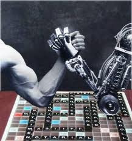

Here we are gonna talk about the netflix serie called Black mirror, in this web page we will answer some questions.
Do you think that technology improves or inhibits our knowledge tools and skills? Why? We think that it improves it because if you need or want to know something you can serch for it on internet, but it also inhibits you because when there was no internet you needed to investigy for it trying different things.
